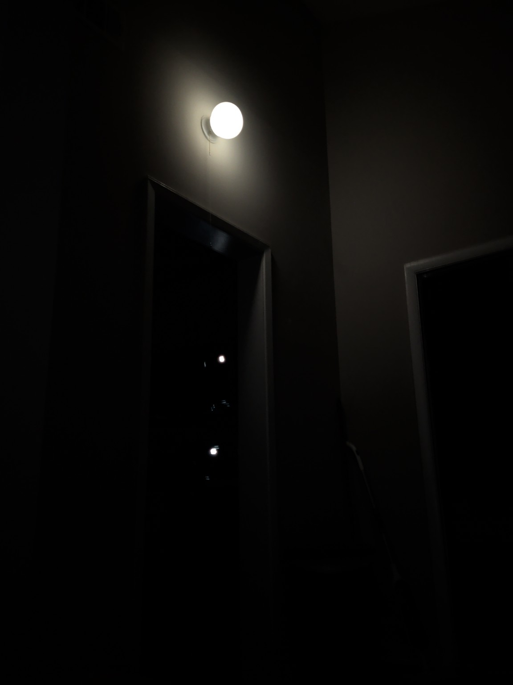
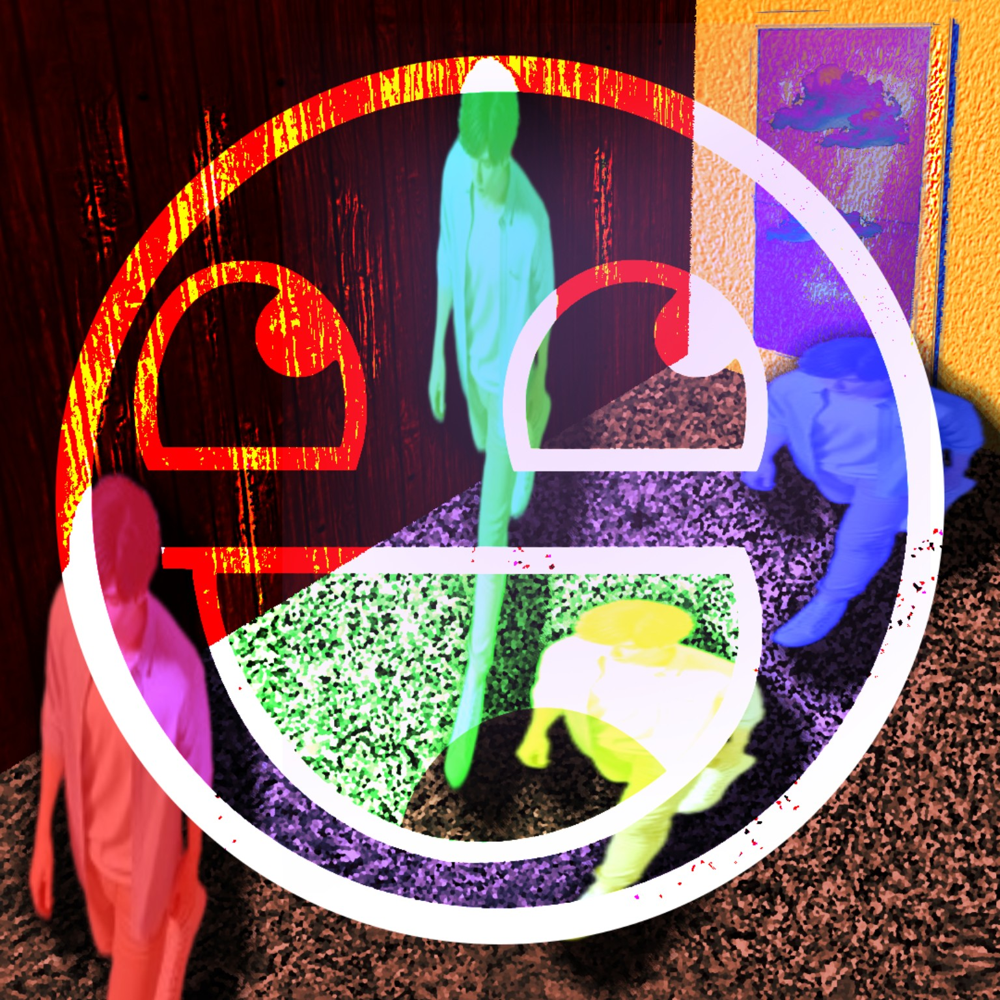

BYTEBASH
7XX
BYTE-BASH, BIT-CLASH
CLICK TO BASH
PROJECT SYSTEM
Startup sound

BYTEBASH
7XX
Local
↶
↷
More ▾
Ⅰ◀
▶
■
●
↻
♩
1:1:000
BPM
Mic → sample
Capture last
Punch
4/4
3/4
6/8
7/8
5/4
Count-in
Save
Export
⚙
File
Edit
Create
Tools
View
Help
Select
Hand / navigate
Slice
Erase
Draw MIDI
Snap
Off
Bar
¼
⅛
1/16
1/32
1/64
⅛ T
1/16 T
−
+
Fit
Audio
Piano roll
Automation
Mixer
Kick Lab
Analysis
↕
⌄
Sounds
Arrange
Notes
FX
Mix